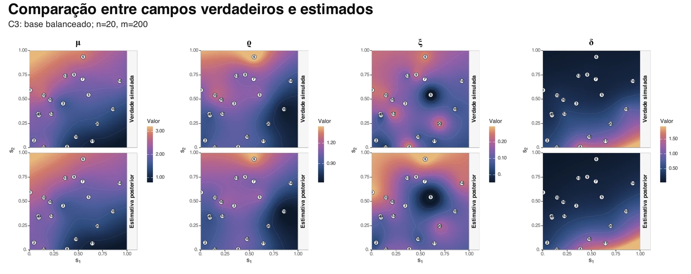

01 / 04
Bayesian spatial extremes
Hierarchical modelling of spatially heterogeneous extremes, flexible marginal behaviour, latent Gaussian structures, computational inference and uncertainty quantification.
- Problem
- Rare events across dependent locations
- Approach
- BGEV marginals · Gaussian fields · HMC/NUTS
- Setting
- Relative-humidity-deficit extremes in the Amazon